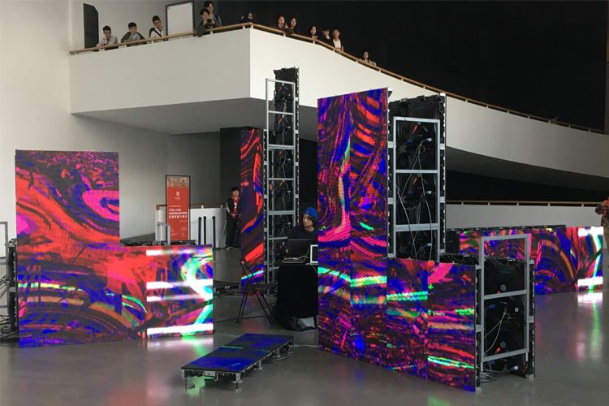

-
声音棱镜
# Nanjing University of the Arts, Nanjing, China
# 03.23.2019
物理学中认为,声音(sound)是由物体振动产生的声波，是通过介质（空气或固体、液体）传播并能被人或动物听觉器官所感知的波动现象。声音是我们感知世界最原始的方式，当我们还没有掌握语言的时候，宏亮的哭叫声传递给世界我们的需求，在这里，声音是一种客观存在的介质；风声、流水、小鸟的啼叫，地籁、人籁，万事万物用特有的声音表达着自己的性格、状态，于此，声音在介质之上又有了抽象的物质性。从现代物理学到《庄子.齐物论》，声音都是如此缥缈难以定义。在美术馆这样一个规范性的空间里，声音可以做些什么？成为了符合作品标准的形态之后又该如何展出和保存？表演之于声音是另一种难以定义的媒介还是让声音这个灵魂有了附着体？
